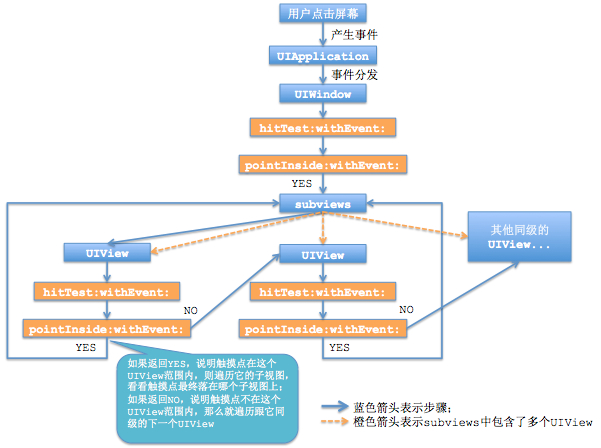
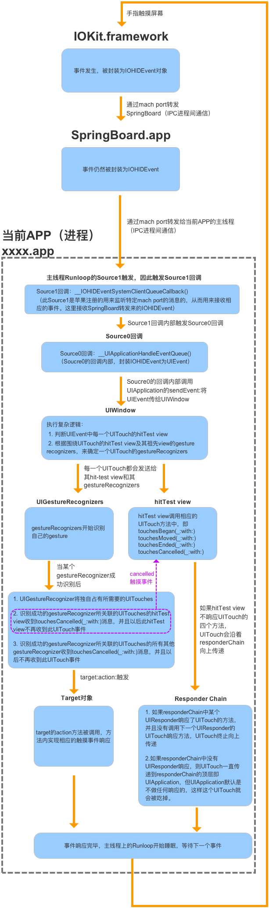

UIButton扩大点击范围以及关于响应者链条的思考
平时开发遇到一个比较蛋疼的情景就是，设计给的按钮是40x40pt的，但是UE又觉得按钮太小，总是点不准，想要增大点击范围，这个要求合理合法，开发没有任何拒绝的理由。那就把按钮弄大吧，然后各种计算frame，按钮可能还有边框渐变色什么的，还得更复杂的处理一番，折腾下来身心俱疲。
程序员这么懒的人怎么可能做这种又low又类的工作呢，所以肯定是有解决方法的，一顿搜索后，发现智慧就是这么简单，想要扩大UIButton的响应区域，让用户在点击UIButton以外的范围的时候也可以响应按钮的触发事件，只需要重写UIButton的对象方法-(BOOL)pointInside:(CGPoint)point withEvent:(UIEvent *)event;，然后只要点击在在想要响应按钮事件的范围内，返回YES即可。下面提供一个分类方法，直接设置hitEdgeInsets属性即可实现扩大响应范围。
#import <UIKit/UIKit.h>
@interface UIButton (HitRect)
/**
自定义响应边界 UIEdgeInsetsMake(-3, -4, -5, -6). 表示扩大
例如： self.btn.hitEdgeInsets = UIEdgeInsetsMake(-3, -4, -5, -6);
*/
@property(nonatomic, assign) UIEdgeInsets hitEdgeInsets;
@end
#import "UIButton+HitRect.h"
#import <objc/runtime.h>
@implementation UIButton (HitRect)
#pragma mark - set Method
- (void)setHitEdgeInsets:(UIEdgeInsets)hitEdgeInsets {
NSValue *value = [NSValue value:&hitEdgeInsets withObjCType:@encode(UIEdgeInsets)];
objc_setAssociatedObject(self,kHitEdgeInsets, value, OBJC_ASSOCIATION_RETAIN_NONATOMIC);
}
#pragma mark - get Method
- (UIEdgeInsets)hitEdgeInsets {
NSValue *value = objc_getAssociatedObject(self, kHitEdgeInsets);
UIEdgeInsets edgeInsets;
[value getValue:&edgeInsets];
return value ? edgeInsets:UIEdgeInsetsZero;
}
#pragma mark - override super method
- (BOOL)pointInside:(CGPoint)point withEvent:(UIEvent *)event {
//如果 button 边界值无变化 失效 隐藏 或者透明 直接返回
if (UIEdgeInsetsEqualToEdgeInsets(self.hitEdgeInsets, UIEdgeInsetsZero) || !self.enabled || self.hidden || self.alpha == 0 ) {
return [super pointInside:point withEvent:event];
} else {
CGRect relativeFrame = self.bounds;
CGRect hitFrame = UIEdgeInsetsInsetRect(relativeFrame, self.hitEdgeInsets);
return CGRectContainsPoint(hitFrame, point);
}
}
@end
响应事件流程分析
一个UIButton上加上一个UIView，点击UIView的时候能响应UIButton的响应事件吗？
这个是有前提条件的，UIView有一个属性userInteractionEnabled，其他的继承UIView的控件也有这个属性，这个属性的意思就是当前视图是否支持交互，默认UIView的userInteractionEnabled是YES，所以是可交互的，当挡住UIButton的时候，UIView就不响应事件了。相对应的，UIImageView和UILabel默认是NO，所以如果不改这个属性的话，这两个控件是挡不住UIButton的。
还有一个引申的问题，如果在UIImageView上添加一个UIButton，点击UIButton的时候能响应UIButton的响应事件吗？
默认情况下，UIButton是不能响应事件了，因为UIImageView的userInteractionEnabled默认是NO，是不支持交互的，这样的话，它上面的子View，也无法交互了。
一个小小的属性居然如此神奇，到底是何原因呢，这里就要说一下iOS的事件响应流程和响应者链条了。
WHY
其实开始在这里还东鳞西爪了一些东西，始终觉得不够完善，调理也不够清晰，所以直接全删了，发现一些文章质量很高，先贴过来了，当然其中的很多猜想也不全是对的，所以看文章要小心咯。。
https://www.jianshu.com/p/ef33cc31a614
https://www.tuicool.com/articles/6VFn2q
http://www.cnblogs.com/Quains/p/3369132.html
https://www.jianshu.com/p/8dca02b4687e
https://yq.aliyun.com/articles/31481
http://shellhue.github.io/2017/03/04/FlowOfUITouch/
http://www.cocoachina.com/ios/20160630/16868.html
http://shellhue.github.io/2017/03/04/FlowOfUITouch/sw
强迫症犯了
看完上面的文章我总觉得得写点什么补充补充，又不想写太多，就摘一些关键的地方吧。
消息响应流程
界面响应消息机制分两块，（1）首先在视图的层次结构里找到能响应消息的那个视图。（2）然后在找到的视图里处理消息。
【关键】（1）的过程是从父View到子View查找，而（2）是从找到的那个子View往父View回溯（不一定会往回传递消息）。

实际开发遇到的问题
在实际开发中，经常会遇到视图没有响应的情况，特别是新手会经常搞不清楚状况。
一下是视图没有响应的几个情况：
1.userInteractionEnabled=NO；
2.hidden=YES；
3.alpha=0~0.01；
4.没有实现touchesBegan:withEvent:方法，直接执行touchesMove:withEvent:等方法；
5.目标视图点击区域不在父视图的Frame上 (superView背景色为clear Color的时候经常会忽略这个问题)。
iOS响应者链的全过程:

找到一个View所在的ViewController
找到一个view所在的controller，其实就是顺着他的响应链一直往下找，直到找到一个responser类型是UIViewController。
- (UIViewController*)findViewControllerOfView:(UIView*)view {
id responser = view.nextResponder;
UIViewController* resultController = [[UIViewController alloc] init];
while (![responser isKindOfClass:[UIViewController class]]) {
responser = [responser nextResponder];
}
if ([responser isKindOfClass:[UIViewController class]]) {
resultController = responser;
}
return resultController;
}
Copyright © 2015 Powered by MWeb, Theme used GitHub CSS.